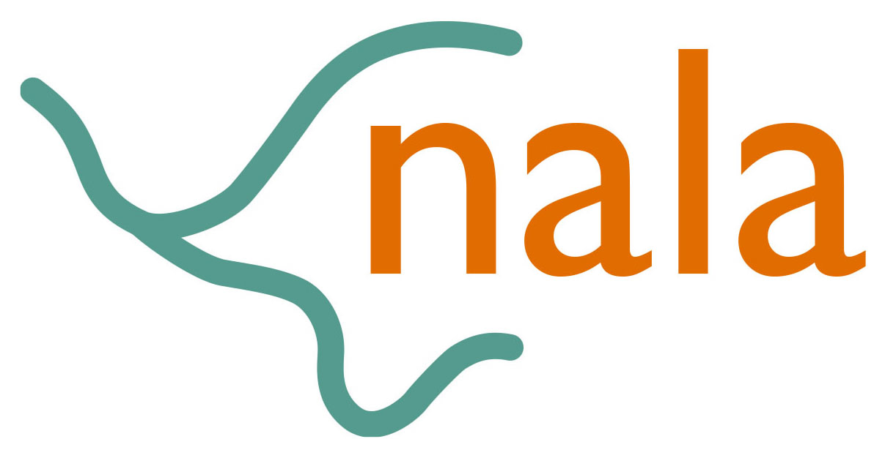
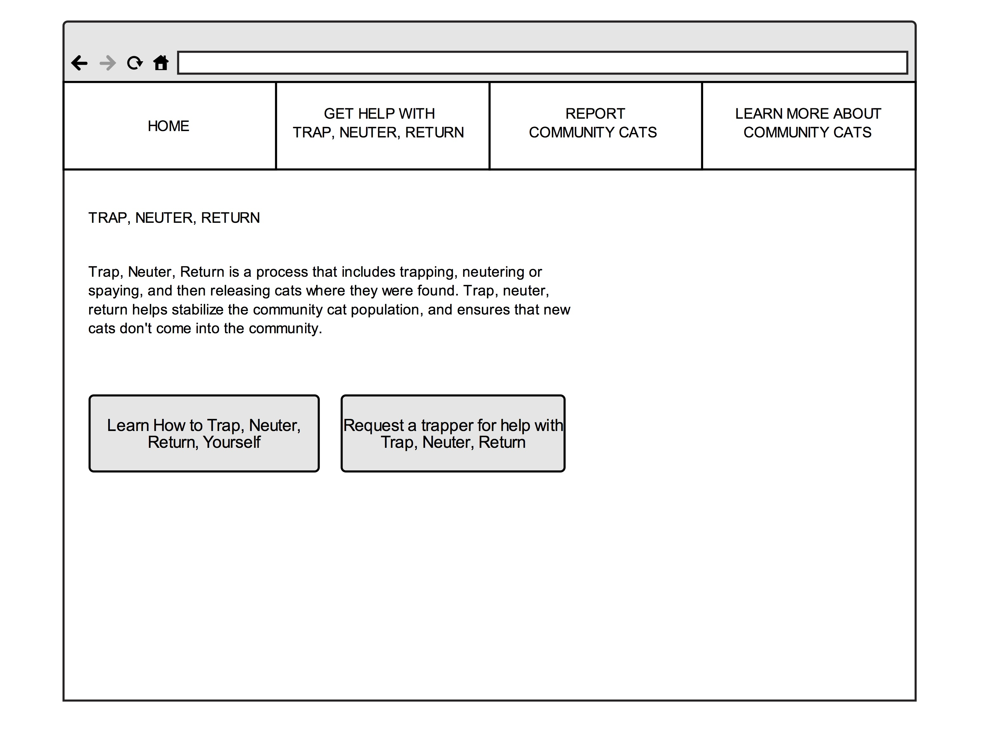
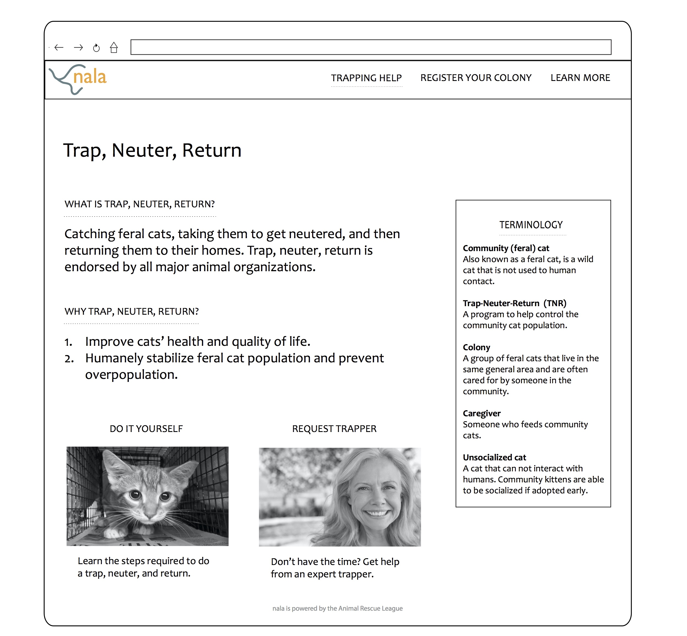

About the Project
Every year, the Animal Rescue League receives an overwhelming number of cats partly because community cats are not spayed or neutered. My two teammates and I make up team nala. Our goal is to build a tool that helps control the community cat population through spay/neuter programs and education. 
Role Description
During our research phase, I designed our research plan and conducted interviews and contextual inquiries. Additionally, I synthesized the data, brainstormed and created visions with my team.During our design phase, I created our lo-fidelity and mid-fidelity prototypes. I am also currently working on our report design, which is a book. Finally, I am working on creating a service plan for the Animal Rescue League that features a service blueprint.
Process

After we chose a vision, I mocked up our paper prototypes. We created a request a trapper website to increase the number of people who spay and neuter their cats by decreasing their workload in the trap, neuter, return process. The website also allows people to report feral cats so the ARL can target education about feral cats to dense areas. Click here to view all of the lo-fidelity mockups. 
After gathering feedback from testing, I created our mid-fidelity mockups. After testing, we changed our report a cap concept to reporting a colony, because we received overwhelming feedback from community members that they would not report feral cats. Additionally, the animal rescue league can use data of cat colonies to release feral cats to their homes. Click here to view all of the mid-fidelity mockups. 
Next Steps
We are currently testing our prototypes with community members and feral cat caregivers and working on our final report.